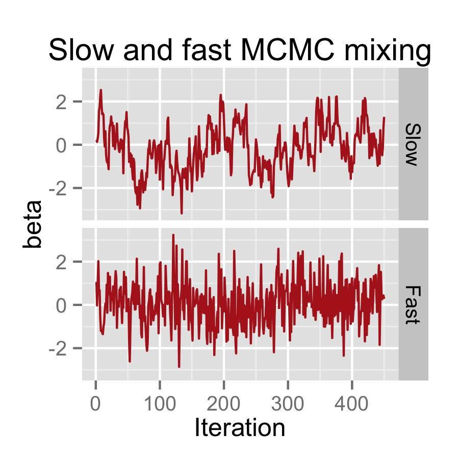

NIMBLE
An R package for programming with BUGS models and compiling parts of R
Write statistical models in the BUGS language from R
NIMBLE adopts and extends BUGS as a modeling language and lets you program with the models you create.
Other packages that use the BUGS language are only for Markov chain Monte Carlo (MCMC). With NIMBLE, you can turn BUGS code into model objects and use them for whatever algorithm you want. That includes algorithms provided with NIMBLE and algorithms you write using nimbleFunctions. NIMBLE extends BUGS by allowing multiple parameterizations for distributions, user-written functions and distributions, and more.
Use and customize NIMBLE’s statistical algorithms
NIMBLE provides MCMC, sequential Monte Carlo (particle filters), and more.
NIMBLE algorithms are written so they can adapt to different statistical models. For MCMC, NIMBLE can assign a default set of sampler choices, but you can customize the samplers from R. For example, you can choose what parameters to sample in a block, and you can easily write your own samplers and include them.
Compile your models and algorithms for fast execution.
NIMBLE generates C++ code customized to your model and algorithms, compiles it, and lets you use it from R.
You don’t need to know anything about C++ to use NIMBLE’s compiler. NIMBLE provides R functions to call the compiled algorithms, and you get the output back in R. (You do need to have a C++ compiler and related tools installed. See installation instructions.)

Write your own algorithms in NIMBLE
Writing new statistical methods using nimbleFunctions in R is similar to writing R functions.
If you have a method you’d like to implement, you can program it using nimbleFunctions. The syntax is very similar to R, but you’ll need to learn some details to get started. The nimbleFunction system allows programmers to control how a particular algorithm should adapt to each model and/or variables it is applied to. The NIMBLE compiler can make nimbleFunctions run very efficiently.

Compile numerical work in R via C++ without coding any C++.
Don’t care about models written in the BUGS language? Just want to try making your R code to go faster?
nimbleFunctions don’t need to use BUGS models, so you can use them to speed up many kinds of numerical computations for any other purpose. The NIMBLE compiler can handle math, including linear algebra and distributions. It also supports basic iteration, flow control, and data structures.